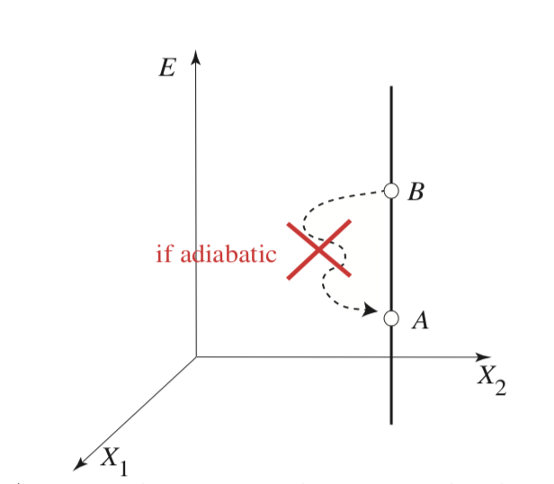

Review of thermodynamics principles#
What you need to know
Thermodynamics is an exact phenomenological theory describing changes in material systems in equilibrium. Phenomenological means that the macroscopic phenomena are defined in terms of a few quantities that can be observed and measured by macroscopic devices without any reference to microscopic details.
Thermodynamics operates with Extensive variables (additive quantities like energy, volume, and number of moles) that completely define thermodynamic space.
Intensive variables (temperature, pressure, magnetic field) can be derived from extensive ones, providing a convenient way of describing the system under constant external conditions.
Changes can be induced by the removal of constraints, such as removing lids, turning on/off the electric field, poking holes in containers, removing thermal insulation, stretching polymers with an applied force, etc
Thermodynamics provides ways of calculating changes of state variables between equilibrium states A and B, which system transitions after removing a constraint. Furthermore, thermodynamics can predict whether state B can be reached spontaneously or one has to perform work to arrive at state B.
Thermodynamics is built upon fundamental laws. The first law is a statement about the conservation of energy. The second law defines the direction of change of a process, that is, whether the process will proceed spontaneously. The second law implies that the thermodynamic space is foliated into adiabats equal to constant entropy. Surfaces.
Thermodynamic potentials (Gibbs free energy, Helmholtz free energy, enthalpy) help analyze systems under different conditions (constant temperature, constant pressure, etc.)
Legendre transformation shows that using free energies changes variables from less convenient to more convenient. Yet the underlying principle remains the same as stated in the second law: isolated systems approach equilibrium by increasing entropy, and the final equilibrium state corresponds to a maximum of entropy over variables inducing the change. For non-isolated systems, equilibrium corresponds to the minimization of free energy of the system (or maximization of entropy of a larger system which can be considered isolated)
Extensive vs Intensive variables#
In thermodynamics, there are two kinds of variables: extensive and intensive. The former depends on the size of the system, and the latter is size-independent.
Extensive variables are privileged variables that uniquely define the equilibrium states. Examples are \(V, N, E, S\).
Intensive variables are derived from extensive ones and are considered as conjugate pairs to extensive ones. E.g \(V-P\), \(N-\mu\) and \(S-T\), are conjugate pairs.
Intensive variables do not have the same fundamental status as extensive variables
Because they do not always uniquely describe the state of matter in equilibrium.
For example, a glass of water with and without an ice cube can be under 1 atm and 0 C, whereas energy and entropy volume values will differ.
Large N ensures the extensivity of Energy
For volume, it may be straightforward to explain why it is extensive. But why is Energy an extensive quantity \(E= E_1 + E_2\) for a system with N interacting particles?
The additivity of energy can hold if we assume pairwise interactions between particles with interacting potential decaying with distance faster than the \(r^{-3}\) in 3D. Meaning that surface interactions become negligible. For instance, if we divide the glass of water into two parts, the total energy, to a good approximation, is a sum of two halves. But notice that if we have microscopic quantities, like handfuls of molecules, this is no longer true
Equilibrium and the observation time#
Equilibrium refers to a state of matter which is unchanging. There are no macroscopic fluxes or flows of energy or matter.
Equilibrium can also be defined as a particular state of matter where a simple macroscopic (as opposed to complex microscopic) thermodynamic description is possible regarding extensive variables. Many of the quantities of interest are ill-defined if the system is not in equilibrium (temperature, pressure, etc). In thermodynamics, we can calculate changes from state A to state B of a system that proceeds via non-equilibrium paths, but it does so by constructing quasi-equilibrium paths ensuring that state A and B are both in equilibrium.
The state of Equilibrium is defined relative to observation time! A glass of water on the table is in a state of equilibrium on the time scale of minutes but in a state of non-equilibrium over the scale of days because water evaporates, changing the thermodynamic state of the glass.
Fundamental equation of thermodynamics#
Fundmanetal equation in thermodynamics is the equation that binds together all of the extensive variables, e.g., \(E(U,V,S,N_1, N_2, ...)\). The state of equilibrium is completely defined by the fundamental equation as a point in the space of thermodynamic coordinates: \(E, V, N, S\). These coordinates have unique and well-defined values for each equilibrium state irrespective to how such state was created. Whether through the violent non-equilibrium process or calm quasi-static sequence of equilibrium states. This is why the functions of extensive variables \(E(S,V,N)\) or \(S(E,V,N)\) are called state functions, and their changes are given by differences between initial or final state only \(\Delta E =E_f -E_i\), \(\Delta S =S_f -S_i\). On the other hand, the work \(W\) or heat \(Q\) are process dependent, characterizing the way energy is transferred to the system and not characterizing equilibrium states itself.
Transformations between equilibrium states is the central task of thermodynamics. Knowing the fundamental equation, one can predict the equilibrium state B, which results from equilibrium state A through spontaneous transformation upon removal of a constraint. E.g computing \(\Delta E = E_B - E_A\) given expansion of a box.
Quasi-static path: a dense succession of equilibrium states that connects A with B in extensive variables is constructed to compute changes in thermodynamic variables between states A and B. This equilibrium path is quasistatic to ensure the system does not deviate from the equilibrium state during transformation. The quasistatic path can also be reversible when the path from B to A can be re-traced with zero change in the universe while the system remains in equilibrium. This necessitates the introduction of Entropy, which differentiates reversible from non-reversible changes.
Reversible transformations can go in either direction without any change in the environment Quasistatic paths may correspond to irreversible or reversible transformations! Just because the process is infinitely slow and locally in equilibrium does not make it reversible. For instance, poking a small hole in a container and letting one molecule out very slowly does not make the process reversible. This motivates us to introduce a quantity called entropy, the change of which will tell us whether the process is reversible or not.

Irreversibility emerges from large N#
If you play bridge long enough you will eventually be dealt any grand-slam hand, not once but several times. A similar thing is true for mechanical systems governed by Newton’s laws, as the French mathematician Henri Poincare (1854-1912) showed with his recurrence theorem in 1890: if the system has a fixed total energy that restricts its dynamics to bounded subsets of its phase space, the system will eventually return as closely as you like to any given initial set of molecular positions and velocities. If the entropy is determined by these variables, then it must also return to its original value, so if it increases during one period of time it must decrease during another.

Zermello is right for small systems. A dynamical system will alwasy return to its starting configuration hence irreversibility is not a property of micrsccopic systems.
Boltzman is right for large systems becasue a likelihhood of recurrence for macrosystem happening is beyond the lifetime of a universie. Case closed.
Need for an extensive variable called entropy S#
{kind=link}
Planck’s formulation of 2nd Law:
For any adiabatic process where all of the work coordinates return to their initial values (doing a cycle). The energy of a thermally isolated system cannot decrease!
Intuitively, this just means that we can only impart some energy to the system when doing pure mechanical work on the system because of friction or dissipation. Put another way by through mechanical work, “steal” energy away from a closed system without any other environmental change.
Thus it turns out that in thermodynamic space, not all paths are possible; one can not reach from A to B. This implies the existence of some law and perhaps a new variable that can quantify when transitions are permissible and when not.
This restriction means surfaces (or lines) corresponding to adiabatic changes can not intersect. Because if they do, then one can design a cyclic mechanical process to decrease the energy. It would also be physically nonsensical for the intersection point to have two different forces (energy derivatives) for the same coordinates!
Thus, thermodynamic space is made up of non-crossing adiabats. This naturally leads to a quantity that characterizes the adiabats as a function of energy \(S(E)\) and which stays constant on adiabats.
{kind=link}


First Law#
Mechanical energy conservation law extended to many-body thermal systems. Energy can change because of heat or work exchange with the surroundings.
\(\delta Q\) and \(\delta W\) are inexact differentials. This means that work done to go from A to B will depend on a path from A to B
dE is an exact diffrential. This means the energy difference between states A and B is the same regardless of the path one takes.
Note on signs
By convention sign of work or heat is positive if energy is transfered to the system and negative if it system loses energy. Hence think about signs from the perspective ofa system under study.
If engine does work against external pressure \(p\) then \(dW= -pdV\). You can see work is going to be negative for expanding volume \(V_2>V_1\): \(-p (V_2-V_1)< 0\)
If system is absorbing heat from environment (heating up) \(\delta Q>0\). If the system is refridgerating then \(\delta Q<0\)
Second Law#
Adiabatic system
For a system that undergoes adiabatic (read no heat exchange) and quasistatic (read not deviating from equilibrium) processes, entropy can not decrease!
Once reaching the state of equilibrium, entropy reaches its maximum and does not change spontaneously \(dS=0\). Thus, to predict the equilibrium state of a thermodynamic system, one can maximize the entropy of an isolated system with respect to the variables that change!
Non-adiabatic system
What about non-isolated systems which exchange heat \(\delta Q\). In this case, the change of entropy comes from changes in the system (\(dS\)) + changes in the environment (\(dS_r\)) we call the reservoir (e.g., room in which a glass of coffee is cooling.
the reservoir is very big, and its temperature \(T\) is unchanging hence \(dS_r = -\frac{\delta Q}{T}\). The Minus sign is because the heat has the sign with respect to the system (positive for gaining and negative for losing).
This equation tells us that entropy increases because of heat flow, but other changes (internal structural rearrangements) could also increase entropy. hence the change of entropy is more than equal to \(\delta Q/T\). For reversible heat transfer equality will hold which is why in gibbs equation \(dQ=TdS\)
Example
The fundamental equations for two systems \(A\) and \(B\) separated by diathermal wall (no heat flow allowed) is
The total energy is \(U_A + U_B = 80 J\)
The volume and mole number of system \(A\) are \( 9 \times 10^{-6}\ m^3 \) and \(3\) mol respectively.
The volume and mole number for system \(B\) are \( 4 \times 10^{-6}\ m^3 \) and \(2\) mol respectively.
Plot the total entropy \(S_A + S_B\) as function of energy distribution between two systems \(X=U_A/(U_A + U_B)\)
If we enable heat flow between systems A and B a new equilibrium state would be established. What would \(U_A\) and \(U_B\) be like in this new equilibrium state?
Solution
we know \(U_A + U_B = 80\), therefore
Plugging in \(V_A\), \(V_B\), \(N_A\) and \(N_B\) we get:
\(S = S_A + S_B = \left(3 \times 9 \times 10^{-6} \times 80X \right)^{1/3} + \left(2 \times 4 \times 10^{-6} \times 80(1-X)\right)^{1/3} = 0.086(1-X)^{1/3} + 0.129X^{1/3}\)
Gibbs relation#
Given the energy as a function of extensive variables \(E(S,V,N)\), we can write down its full differential.
We identify intensive variables conjugate to extensive variables:
This is known as Gibbs relation in Thermodynamics and is a starting point for thermodynamic calculations.
Example
Consider an ideal gas in a container that is in a state of equilibrium and is therefore described by \(E(S, N, V)\) or \(S(E, N, V)\) fundamental equation.
Using the ideal gas relation \(PV=Nk_B T\) for monoatomic gas, derive an expression for entropy
Plot entropy surface as a function of Volume and Energy
Solution
\(E = \frac{3}{2}Nk_B T\) and \(PV = Nk_BT\) for monoatomic gas
Example
Consider the sudden Doubling of the volume of one mol of an ideal gas in a container.
Using information theoretical view of entropy, compute how much entropy of the system changes as a result of sudden doubling.
Using the expression for entropy, derive how much entropy of the system changes as a result of sudden doubling.
Is the adiabatic expansion of gas due to volume doubling reversible or irreversible?
Think about quasistatic path for this process
Solution
Gibbs Duhem relation#
The extensivity property implies linear scaling with respect to extensive variables. In other words, extensive variables are additive quantities.
Using chain rule we get a liner relationship between extensive variables not involving any differentials:
Now when we take the derivative of E and compare with Gibbs relation we end up with equation where independent variables are now intensive ones
Second order thermodynamic quantities#
\(C_v\) and \(C_p\): Heat capacities at constant V and P.
Thermal stability requires \(c_v,c_p\geq 0\)
\(\alpha\) and \(\kappa_T\): Thermal expansion and isothermal compression coefficients.
Mechanical stability requires \(\kappa_T\geq 0\)
Free Energies and Legendre transforms#
Motivation: The energy \(E\) is natural a function of all extensive variables \((S, V, N, ...)\) and can be used to find equilibrium by minimizing with respect to independent variables \(min_{[S,V,N]} E\). But what if the independent variables are not convenient to control and we want to adopt a new ones where we can hold some of them constant.
Legendre transformation: is what we call the change of variables in thermodynamics. The Legendre transofrmation turns Energy function into free energy function. Equilibrium state is again found by minimizing Free energy function! That is Legendre transform does not change the shape of the Energy function whcih is convex with respect to independent variables!
Note that Legendre transform of \(E\) ends up wapping extensive variables with intensive ones.
Free energies contain as much information as the \(E(S, V, N)\). THis is becasue Legendre transform is invertible! One can start with free energy and trasnform back into energy.
Free energies have different independent variables that are often more convenient to control experimentally, e.g pressure and temperature instead of entropy
General Procedure: Change in energy can be seen as produced by paiars of conjugate variables: for instance \((S, T)\), \((p, -V)\), \((\mu N)\)
We can write the energy function more generally in terms of aribitrary number and kind of cojugate pairs (\(f_i\), \(X_i\))
For each pair \(f_i\), \(X_i\) we can define a new thermodynamic potential by the Legendre transformation.
The sum goes over those variables \(X_i\) that we would like to replace with \(f_i\).
Helmholtz Free energy
Gibbs Free energy
Review of thermo concenpts
Give an example of a process in which a system is not heated, but its temperature increases. Also give an example of a process in which a system is heated, but its temperature is unchanged.
Which states are in an equilibrium state, a time-dependent non-equilibrium state, or a time-independent but still non-equilibrium state (e.g., steady state)? Explain your reasoning. Sometimes, the state is not a true steady or equilibrium state but close to one. Discuss how it can be treated as a steady or equilibrium state.
a cup of hot tea, sitting on the table while cooling down
the wine in a bottle that is stored in a wine cellar
the sun
the atmosphere of the earth
electrons in the wiring of a flashlight switched off
electrons in the wiring of a flashlight switched on
What is meant by a constraint in thermodynamics, and why must its removal always lead to increased entropy?
What is a quasi-static process in thermodynamics, and how is this idealization used for computing changes in thermodynamic variables?
What is the difference between the fundamental equation in thermodynamics \(S(E,V,N)=\) vs. state equation \(P(V,N,T)\) e.g., like \(PV=NRT\) for ideal gas?
Why during a spontaneous transformation of systems entropy tend to its maximum value? This is why we use entropy maximization as a powerful tool to predict the final equilibrium states.
Why do we introduce Free energies of various kinds? Explain why free energy minimization is equivalent of total entropy maximization.
Can part of the entropy of a part of a total system decrease? Give some examples.
Does the entropy change depend on the path between two equilibrium states?
How is the adiabatic process different from the quasistatic and reversible process?
Problems#
Fundamental equations#
The following ten equations are purported to be fundamental equations for various thermodynamic systems. Five, however, are inconsistent with the basic postulates of a fundamental equation and are thus unphysical. For each, plot the relationship between \(S\) and \(U\) and identify the unacceptable five. \(v_0\), \(\theta\), and \(R\) are all positive constants and, in the case of fractional exponents, the real positive root is to be implied.
\(\ S = \left ( \frac{R^2}{v_0\theta} \right )^{1/3}\left ( NVU \right )^{1/3}\)
\(S = \left ( \frac{R}{\theta^2} \right )^{1/3}\left ( \frac{NU}{V} \right)^{2/3}\)
\(S = \left ( \frac{R}{\theta} \right )^{1/2}\left ( NU + \frac{R\theta V^2}{v_0^2} \right)^{1/2}\)
\(S = \left ( \frac{R^2\theta}{v_0^3} \right ) \frac{V^3}{NU}\)
\(S = \left ( \frac{R^3}{v_0\theta^2} \right )^{1/5}\left ( N^2U^2V \right)\)
\(S = NR \ln \left ( \frac{UV}{N^2 R \theta v_0} \right )\)
\(S = \left ( \frac{NRU}{\theta} \right )^{1/2}\exp \left (-\frac{V^2}{2N^2v_0^2} \right )\)
\(S = \left ( \frac{NRU}{\theta} \right )^{1/2}\exp \left (-\frac{UV}{NR\theta v_0} \right )\)
\(U = \left ( \frac{NR\theta V}{v_0} \right ) \left ( 1+\frac{S}{NR} \right ) \exp \left (-S/NR \right)\)
\(U = \left ( \frac{v_0\theta}{R} \right ) \frac{S^2}{V} \exp\left ( S/NR \right)\)
Expansion of gas into the vacuum#
As a general case of gas expanding into the vacuum, use the Gibbs relation for \(E\) to show that \(\Big(\frac{\partial S}{\partial V}\Big)_E>0\) this would show that free adiabatic expansion is accompanied by entropy increase and is hence and irreversible process.
Now consider a gas in container energy described by the following equation \(E = 3/2NkT −N^2 V/a\)
Plot E as a function of V for a few temperatures.
Suppose that a gas expands adiabatically into a vacuum. How will the energy and entropy of the system change, and what is the work done by the gas?
Initially, the gas occupies a volume \(V_1\) at a temperature \(T_1\). The gas then expands adiabatically into a vacuum to occupy a total volume \(V_2\). What is the final temperature \(T_2\) of the gas?
Entropy of mixing two gases#
Using the expression for an ideal gas \(S=Nk_B log \frac{V}{N}\), calculate the entropy change resulting after removing a divider separating \(N_A\) molecules of gas A occupying Volume \(V_A\) from \(N_B\) molecules of gas B occupying volume \(V_B\).
Hints
The system overall is thermally insulated and pressure and temperatures are constant; hence, numbers and volumes are proportional \(N_A \sim V_A\) so you can express entropy change entirely in terms of molar numbers or their fractions \(x_A = N_A/(N_A+N_B)\)
You need to first calculate the entropy change due to gas A expanding from volume \(V_A\) to volume \(V=V_A+V_B\) and the same for gas B. the total entropy change will be the sum of these two changes.
Entropy of heating#
1 kg of water (specific heat = 4.2 kJ/(kg·K)) at \(0 ^oC\) is in contact with a \(50 ^oC\) heat bath, and eventually reaches \(50 ^oC\). What is the entropy change of the water? What is the increase of the entropy of this water plus the heat bath?
Imagine now that the water at \(0 ^oC\) is in contact with a \(25 ^oC\) heat bath. Then, after reaching thermal equilibrium, the water is subsequently put in contact with a \(50 ^oC\) heat bath until it reaches the final temperature \(50 ^oC\). What is the increase of the entropy of the water after it has been put in contact with two heat baths? Compare the answer to the case of (1)
Show that in the two-step heating process, whatever the first heat bath temperature T is between \(0^oC\) and \(50^oC\), the total change of entropy of the water plus heat baths is less than the case of (1)
Legendre transforms and free energy calculations#
Use Legendre transform to go from \(E(N, V, T)\) to \(F(S,p,N)\) and to \(G(T,p,N)\).
1 mole of an ideal gas at 300 K is quasistatically and isothermally compressed from 5 to 25atm. Find \(\Delta F\) and \(\Delta G\)